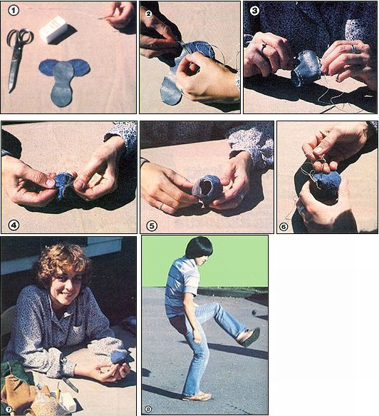
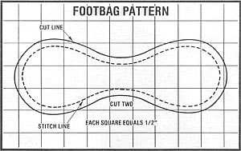

You can rejuvenate worn-out muscles and a tired sense of humor - or, perhaps, just take a break from overly competitive sports - if you get involved in this "play it anywhere" game.
Footbags, little leather pouches filled with seeds, can be seen zipping through the air (from foot to foot) almost anywhere today . . . in living rooms, town squares, or checkout lines at the supermarket!
These go-anyplace squashable objets de sport are about the size of racquetballs and are controlled with the foot, as is a soccer ball. The toy was developed in Portland, Oregon, where - in 1972 - an athlete named John Stalberger created a kickable plaything to use while rehabilitating an injured knee . . . and the sturdy little toe-teaser has since swept across the North American sports scene.
The growing popularity of the "footgame" is due, in part, to its amazing versatility. The bag is small enough to be carried in almost any pocket, and can provide entertainment for one or more persons . . . either in competitive play or "just for kicks" action. Of course, as with most sports, you can get as serious about this game as your skill and enthusiasm allow. There's even a national association, which boasts a membership of well over 1,000 and sponsors tournaments all across the United States. On the other hand, anyone who can participate in this pastime without breaking into an occasional spontaneous grin is likely missing the point . . . because, above all, it's fun!
FOOTNOTES: GETTING INTO THE GAME
The object of most footbag play is simply to keep the little sack in the air, using only legs and feet. The hands and upper body must not touch the ball, even for blocking, and the result is an activity that really develops eye foot coordination!
Basically, the game requires five kicks. In order of importance and use, they are the inside and outside kicks . . . the back kick . . . and the knee and toe kicks. In each of these maneuvers, you'll soon discover that balance is the most important factor.
The inside kick is used whenever the bag is dropping directly in front of you. To perform it, rotate your ankle and point your toes . . . then reach out and up with your foot so you can meet the pouch with the arch area. (An experienced player should be able to do all the basic kicks with either foot.)
The outside kick (which is put to use when the sack comes to your right or left) involves turning your hips and shoulders parallel to the line of flight and sweeping your leg out from your hip and up to meet the little bag with the outside of your foot at about knee height.
The back kick is pretty difficult to execute, but with practice it can be mastered. This tactic is called for when the pouch goes over your head. Lean forward (for balance) and contact the sack behind you with the outside of your foot.
The last two kicks, knee and toe, come into play less often. Use the knee kick - by raising your leg and stopping the sack with the top of your thigh - to block a footbag away from your midsection and, probably, set it up for either an inside or an outside shot.
The toe kick, which is notoriously hard to control, should be reserved for occasions when the pouch is directly in front of you and too low to manage with any other maneuver.
Once you develop some confidence in your ability to control the basic moves, get out with some friends and pass the sack around. Don't worry about rules: Unless you're playing some form of tournament footbag (such as a variation on volleyball called "net-sack"), you can pretty much make them up as you go along. Even the number of players is open. Four in a square will work well, though, and may be the best formation to start with.
DO IT YOURSELF
Since the sport has become popular under the name "Hacky-Sack", it's now possible to buy "official" (that is, trademarked) Hacky Sack brand footbags in many sporting goods outlets. But it's an easy enough matter - and probably more in keeping with the spirit of this sort of recreation - to make your own version, if you've got about 20 minutes to spare.
First, collect two small pieces of leather. Make sure they're soft and pliable enough to work with, but sturdy enough to hold up to the wear and tear of action. (If you have none on hand, inexpensive scraps can usually be obtained from a leather supply shop, an upholstery firm, or even a secondhand store.) You'll also need some kind of stuffing (mung beans or popcorn kernels are often used) . . . a marker . . . a pair of scissors . . . some dental floss or heavy carpet thread . . . a large, sturdy needle . . . and a pattern (which I've supplied here for you).
THE SETUP
Begin by reproducing the two pieces of sack-to-be, twice, on your leather strips, and then cut out the pair of identical giant peanuts. Lay the pieces down, right sides together, with the end of one peanut lying atop the center of the other. (Key assembly steps are shown in the accompanying photos.) Now, thread the needle with about 18" of double floss or thread, and you're ready to begin.
Before you start stitching, though, it's important that you have an idea of how you're going to turn those leather shapes into a pouch. It's easy to visualize the process if you use your hands to form a "demonstration model". Hold up your left hand . . . palm facing you and fingers pointing right. Now, lay the fingers of your right hand - palm down - against the palm of your left. Then slowly cup both hands as if you were making a snowball ... and you'll get a rough idea of how the two footbag sections will fit together.
SEW TO IT!
Make your first stitch directly through - and about 1/8 inch from the edges of - both layers of leather, at the point where the end of the top piece meets the side of the bottom one. Then go on to seam up the sack, keeping the edges as flush as possible when you roll the leather up into a rounded form. Don't worry if the stitches aren't perfect, but do try to space them fairly evenly . . . about 1/8 inch apart and far enough from the edge of the leather so that they won't cause the material to tear later on.
Go on stitching until you're about 1-1/2 inches from completely closing the ball, then - leaving the needle and thread attached - turn the pouch inside out. (You may need to loosen a few stitches to do this, but they'll tighten back up.) Next, smooth out the shape and fill the sack. You'll want to put in enough popcorn (or whatever) to allow for settling later. However, there's no rule as to how firm the bag should be . . . so you'll just have to experiment until you determine the fill density that suits your playing style.
IN THE BAG
When your sack is packed, close up the open seam . . . turning the raw edges in and keeping the stitches as nearly invisible as you can. To finish sewing up the footbag, pull the thread taut and make a large knot as close to the sack as possible. A French knot works well . . . but any secure tie will suffice. Then cut the floss . . . poke the knot into the seam to get it out of sight . . . and you're done.
Your footbag is ready for action . . . so if you don't already know what to do with the miniature "pigskin", it's about time to find out how to play the game. The accompanying sidebar will get you started, and you'll find that - by virtue of its simplicity - the sport is easy to enjoy . . . but, and this is every bit as important, impossible to really master.
EDITOR'S NOTE: If you want to learn more, order a copy of John Cassidy's The Hacky Sack Book , which is published by Klutz Press (Dept. TMEN, P.O. Box 2992, Stanford, California 94305) and costs $9.00. The price includes postage and handling, and an official Hacky Sack footbag is included with each order. You could also write to the National Hacky Sack Players Association (Dept. TMEN, P.O. Box 17092, Portland, Oregon 97217) to see what that organization has to offer.
|
 [1] Arrange the two pieces as shown, right sides together. [2] Begin stitching with dental floss or carpet thread. [3] Sew until you're about 1-1/2 inches from your starting point. [4] Then turn the pouch right side out . . . [5] fill it with mung beans or popcorn . . . [6] close up the seam . . . [7] and you have a footbag! [8] A successful inside kick keeps the little sack in play. |
 |
|